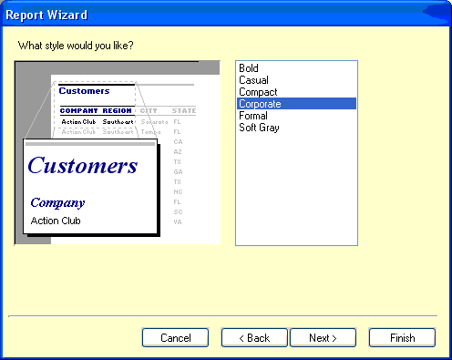
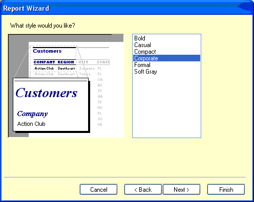

Для того, чтобы вывести на печать, полученные
выполнением запроса, данные в удобном виде, можно воспользоваться специальным
построителем отчетов, который вызывается кнопкой "Макетировать отчет" на
третьей вкладке дизайнера запросов-отчетов SQL. В данном подразделе справки
будет приведен пример такого построения отчета для печати, на основе запроса
отбирающего остатки по отделам (Amount_of_Division, идет с программой в
каталоге Reports).
Итак, после открытия построителя отчетов, зайдите
в его главное меню:
Выберите в меню пункт "Page Setup..." и в
открывшейся форме перейдите на вкладку "Layout":
Вверху на рисунке показано: слева - значение
количества столбцов "Columns" подобрано для вывода ценников в пять колонок;
справа - значение для цельного листа (мы сейчас будем использовать именно
значение 1); часто используется значение 2 столбца (сжатые отчеты по остаткам,
клавишам-кнопкам весов и т.д.). Выберите значение 1 и нажмите ОК.
Выберите в главном меню окна "New...", в
появившемся окне выберите "Report Wizard", нажмите ОК.
В следующем окне выбора полей для отчета
пользуясь кнопочками со стрелками переместите в правый список выводимых полей
все поля, кроме первого.
В следующем окне группировки по полям выберите
группировку по первому полю NAME.
В следующем окне выбора формата определите
понравившийся вам формат отчета и ориентацию страницы, а в окне выбора
стиля - понравившееся оформление:
 

Выберите Finish для перехода к предварительному
просмотру отчета. Если вас не устраивает вид отчета или нужно добавить
дополнительные элементы, например, суммы по столбцам, передите с вкладки
Preview на вкладку Design появившейся формы.
Раздвиньте область GroupFooter и вставьте поле
суммирования, для вывода суммы по каждому отделу (таким же образом можно
проставить сумму по всему отчету в разделе Summary, отображение включается в
меню Reports/Summary).
1. Добавьте поле суммирования с помощью кнопки на
панели инструментов, там же выберите поле для суммирования и раскрасьте в
желтый цвет.
2. Переименуйте английские названия полей в
нормальные наименования.
Вид получившегося отчета при переключении на
вкладку Preview:
В меню File/Save назначьте имя для отчета и
сохраните его. В дальнейшем, при запуске этого запроса и входе в макетирование
отчетов пользуйтесь меню File/Open... и выбирайте данный отчет.